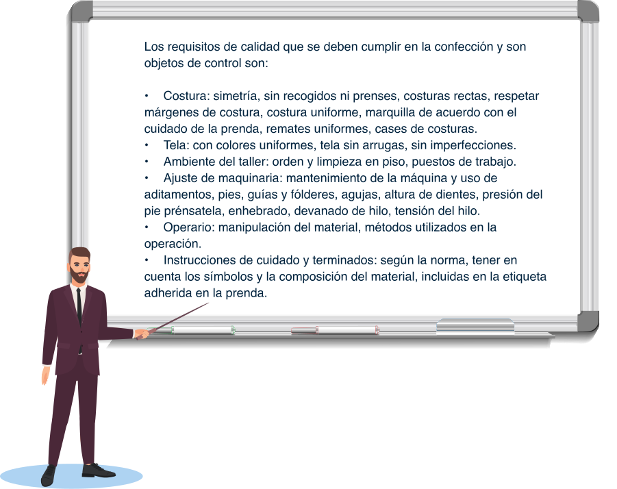

Introducción
Una vez que se ha avanzado en el proceso productivo es necesario ejecutar el proceso de control de calidad en los procesos, insumos, materia prima y materiales; para ello es necesario que el equipo ejecutor de la producción identifique y defina los requisitos de calidad del producto y de cada uno de los procesos que se ejecutan según la orden de producción.
Así mismo, los supervisores de proceso deben conocer los diferentes tipos de inspecciones para establecer cuáles de ellas son las óptimas a realizar en cada lote y con qué metodología realizarlas, de forma que se establezca un adecuado plan de muestreo a desarrollar, el cual permite detectar defectos o inconformidades en un lote de producción y así corregirlos antes de que el producto sea entregado al cliente.
Recuerde que para un “control total de la calidad se debe contar con el conjunto de esfuerzos efectivos de los diferentes equipos de la organización”. (Jaramillo, 1990).
1. Control de calidad en los procesos de confección e insumos
Al momento de estructurar un sistema de control de calidad, se parte de el diagrama operativo de la prenda a confeccionar, de forma que se tiene una visión global del proceso y a partir de ello se crea la estrategia de control. Para ello, se deben definir los puntos y las normas de inspección y la periodicidad de esta.
1.1. Control de calidad en patronaje
El control de los procesos es comprender cuales son las variaciones que se pueden presentar en las características del producto, encontrar las causas y tomar las decisiones para controlar la variabilidad, eliminar los errores, estandarizando el proceso mediante la aplicación de técnicas que permitan establecer mejoras y así controlar la variabilidad.
En el proceso de patronaje la persona responsable del proceso junto con el auditor de calidad, realizan la revisión del paquete físico de moldes o patrones que comprenden la pieza con el fin de garantizar la calidad de los mismos, es importante revisarlos a pesar de que se hayan desarrollado el patronaje de la prenda con algún software especializado.
Una vez se desarrolla la prenda la validación de los patrones debe estar contenida en un documento de revisión de patronaje, lo que permite la trazabilidad del proceso.
Los productos tienen variables y atributos, las variables son características cuantitativas y los atributos son las características no cuantificables, los cuales unidos son los requisitos de una prenda.
Los requisitos además están clasificados de la siguiente manera:

Declarados por el cliente, según sus expectativas.
Necesarios para que cumplan la función para la que son creados.
De acuerdo con la normatividad vigente.
Según las políticas de producción de la empresa.
Los requisitos que se deben considerar en el proceso de patronaje son:
Medidas del patrón con y sin costuras: se comparan las medidas iniciales con las de la prenda terminada con el fin de observar que corresponda con la talla, además es necesario revisar que las medidas de las piezas sean iguales al unir y tengan simetría; en este proceso se pueden superponer las piezas para observar que coincidan en cuanto a sus longitudes.
Cantidad de piezas: se revisa la correspondencia de piezas respecto al diseño y al dibujo plano del patrón.
Señalización de pieza: se debe identificar cada parte de la prenda de forma que no se preste a dualidades de información, además de contener la cantidad de piezas a cortar para el producto solicitado.
Aplomos: observar que exista una indicación clara de las líneas de aplomo de cada pieza.
Costuras: verificar los márgenes de costura en cada pieza, y la correspondencia con la pieza a unir; por ejemplo, si en el hombro en la pieza del delantero el ancho es de 1 cm de margen de costura, en el hombro posterior debe corresponder a la misma medida de margen de costura.
Piquetes y puntos: comprobar la existencia de puntos y piquetes, alineando las piezas y correspondencia entre la unión de puntos y piquetes.
Plantillas: examinar la funcionalidad de la plantilla y sus medidas.
1.2. Control de calidad en trazo y corte
En cada una de las actividades que conforman el área de trazo y corte se establecen controles para revisar y garantizar la calidad del proceso.
Las personas encargadas de cada actividad en el área deben contar con comunicación abierta para coordinar el proceso, debido a que el error en el área se replica igualmente en la producción. Con relación a lo anterior es importante detectar el problema a tiempo.
Es primordial contar con la trazabilidad de la producción, para ubicar fácilmente cada lote, poder intervenir rápidamente en los productos a corregir y dar respuesta rápida para solucionar el inconveniente.
Los documentos utilizados en el área para controlar el corte, además de la orden de producción, son las inspecciones en corte para revisar cada actividad. Además de un formato que se puede anexar en el paqueteo donde se validen las unidades de cada pieza en cada paquete, siendo un apoyo visual importante en el alistamiento del proceso de confección.
Los requisitos de calidad en trazo y corte para revisar en cada actividad son los siguientes:
Trazo
Alineación de piezas: cada pieza debe estar contenida en el trazo conforme a la línea de aplomo. Organización de piezas: con el fin de controlar el rendimiento de las telas, es importante supervisar la disposición de las piezas, colocando una al lado de la otra y aprovechando líneas o curvas compartidas entre las piezas. Cantidad de piezas: contar y verificar que el número de piezas corresponde a cada talla del producto. Ancho de trazo: cotejar que sea conforme al ancho útil de la tela.
Tendido
Alineación de capas: respetar la margen colocada a partir de la base, es decir la primera capa. También que en los extremos alcance a cubrir el largo del trazo, sobre todo en trazos escalonados.
Uniformidad de tendido: el extendido de cada capa no debe tener arrugas.
Cantidad de capas: antes de cortar se debe contar el número de capas, y verificar que correspondan a las unidades a cortar según la distribución del trazo.
Tiempos de reposo: sobre todo en tejidos de punto, para evitar encogimiento, se tiene en cuenta según ficha técnica de la tela y se valida con pruebas que confirmen niveles de encogimiento desarrollado una vez finalicen los tiempos de reposo.
Lado de tela: teniendo en cuenta el tipo de trazo, se deben respetar el derecho de la tela.
Tela: observar si existen defectos en la tela, marcar en lo posible la mayoría de piques y marras, entre otras observadas. Cuidar la combinación de rollos y de colores para evitar contaminación entre los colores por los residuos de las fibras en el corte del tejido.
Corte
Uniformidad: respetar el trazo de cada pieza, obedeciendo a curvas y rectas según sea el caso de cada parte de la pieza.
Simetrías: observar la proporción de cada pieza sosteniendo el colchón o bloque de telas, evitando se corra para que no afecte la simetría en las capas inferiores.
Piquetes y puntos: revisar la ubicación de piquetes y que la profundidad no sea mayor de 0,4 cms; en los puntos evitar que se corra la ubicación, deben tener un tamaño razonable.
Corte de piezas de forro y entretela: revisar que el material y las piezas se corten conforme a la ficha técnica y a la programación de la producción.
Tiqueteado
Ubicación: examinar que se coloque por el revés de la tela en un lugar visible y que no afecte la pieza en el momento del ensamble.
Descripción: observar que la información corresponda a cada pieza, debe contener el número consecutivo de la pieza en orden según el tendido, además incluir la talla y la referencia.
Fusionado
Temperatura: evidenciar que corresponda al material a fusionar.
Tiempo: duración de la pieza en la fusionadora.
Presión: verificar que sea la adecuada en cada pieza para que la unión sea uniforme
Alineación y posición: cotejar que se encuentre derecha y tener en cuenta si se debe dejar el ancho de costura.
Empaquetado
Cantidad: verificar las unidades de acuerdo con lo determinado para incorporar a la producción, se prefiere paquetes pequeños que facilitan el manejo de 10 a 20, es posible más unidades según lo establecido por la empresa.
Amarre: en el doblado de las piezas deben estar incluidas todas las piezas del paquete y con un fuerte amarre.
Identificación: rotular cada paquete con tarjetas que indiquen la información necesaria como talla, número de lote, cantidad, entre otras que precisen el contenido del paquete.
1.3. Control de calidad en confección
En esta parte del proceso es necesario tener en cuenta la distribución de las operaciones, es decir la hoja de ruta; operaciones de preparación, ensamble y terminados. Cada operación tiene un método, un tiempo estándar, y la descripción de maquinaria y aditamentos como pies, guías y fólderes que se deben revisar.
En los puntos de revisión se realizan las inspecciones pertinentes y se retienen las prendas o piezas con defectos para analizar las causas y determinar acciones correctivas, así mismo en los puestos de trabajo con auto calidad, donde la responsabilidad de la revisión es de cada operario con acompañamiento y el apoyo del auditor de calidad en pie de máquina. Conforme corresponda, en la inspección se utilizan los formatos de inspecciones de producto terminado y de producto en proceso.
Además de los factores anteriormente mencionados que son directos al proceso, se consideran los factores ambientales como la iluminación, ventilación, temperatura, ruido, espacio y aseo del lugar de trabajo. También los factores humanos relacionados con el personal como la capacitación y las relaciones interpersonales, los cuales afectan los resultados en los productos y por ende su calidad.
También se pueden realizar pruebas o ensayos en laboratorios especializados que evalúen la prenda según las normas nacionales e internacionales, una de ellas es la prueba de uso en la que se comparan los resultados planteados y los reales obtenidos, de forma que se detecten las fallas en el proceso. En este tipo de pruebas se analizan las fibras, en cuanto a la cantidad, colorimetría, peso, composición, cambios dimensionales después del lavado, resistencia a la rotura y al desgarre, elongación y elasticidad de la tela, recuperación a las arrugas, resistencia a la abrasión, solidez al color con el frote, al agua, al planchado, resistencia a la formación de motas (pilling), entre otras.
En el siguiente cuadro se observan algunos ensayos que se pueden realizar a la prenda y la norma de calidad relacionada al proceso, de acuerdo al organismo de estandarización que expide la norma.
1.4. Control de calidad en terminados
En los terminados se incluyen procesos de planchado, empaque, embalaje y procesos de acabados como lavandería, estampación y bordado.
Puede ser que los procesos de acabados se desarrollen de manera externa a la empresa, es decir, que se subcontratan y por lo tanto, aumenta la importancia de establecer los puntos de control una vez ingresen a la planta, para validar las prendas o piezas una vez se realicen los procesos contratados.
El planchado es la última operación del proceso de producción, es necesario que las personas responsables de la sección tengan los criterios claros para evaluar las prendas que pasarán a las operaciones para la entrega al cliente.
Los requisitos para revisar en cada una de las actividades del proceso de acabados son los siguientes:
Planchado: este debe ser uniforme, con los quiebres según lo especificado, si se debe doblar que no genere arrugas, control en la temperatura para que no queme la pieza, limpieza, además del control en la presión y la humedad.
Empaque: según lo establecido por la empresa, utilizar los recursos como el gancho, bolsa y etiqueta correspondiente.
Embalaje: teniendo en cuenta el pedido del cliente, utilizar materiales como cajas, cinta de amarre o zuncho, cinta adhesiva, tensor para la cinta de amarre. Rotular para identificar el contenido y organizar el contenido.
Estampados: observar que exista uniformidad del dibujo y colores, posición y ubicación.
Bordados: revisar que la tensión del hilo, colores y letras correspondan al diseño, posición y ubicación.
Rebordados: verificar la alineación y ubicación en la colocación de pedrería u otros, el diseño debe corresponder al rebordado realizado.
Lavandería: comprobar la uniformidad de colores, que el proceso corresponda al solicitado, sin dañar las costuras o el tejido de tela.
1.5. Control de calidad en insumos, materiales y textiles
La comunicación con la cadena de abastecimiento es muy importante para solucionar de manera eficiente los problemas derivados que puedan ocurrir en la producción de las prendas.
Los espacios disponibles para recibir los diferentes elementos deben cumplir con condiciones óptimas de ventilación, iluminación, seguridad, aseo y organización, que afectan los requerimientos de calidad en la cadena productiva. El control de inventarios está relacionado directamente con el control de calidad, ya que produce la información para generar las mejoras en la gestión de la empresa.
En las entradas del proceso de producción uno de los recursos son los insumos y materias primas, las revisiones de calidad sobre estos responden a uno de los principios de calidad que es hacer las cosas bien desde el principio, lo que asegura el flujo de los procesos, así mismo, al finalizar el proceso de producción se requieren materiales para la entrega del producto al cliente los cuales de igual manera se deben validar.
Control de calidad en insumos
Los requisitos necesarios para cumplir con las solicitudes de insumos son la disponibilidad, en cuanto a tiempos de obtención para su uso y las características propias de los mismos como funcionalidad, composición, tamaño, peso, color y uniformidad.
En el caso de los hilos se analizan propiedades como elasticidad, flexibilidad, durabilidad, resistencia a rotura, tenacidad, solidez al color, uniformidad de tono y grosor.
En los elásticos es importante realizar pruebas de recuperación de su longitud, teniendo en cuenta el reposo y la tensión ejercida en su elongación.
Es importante controlar desperdicios generados en la producción de los insumos, los cuales inciden en el costo del producto, de allí la importancia del control de los consumos en la planta.
El siguiente cuadro muestra pruebas especializadas que se realizan, para evaluar características de algunos insumos, así como la norma de calidad:
Control de calidad de materiales
Los materiales que apoyan la producción también requieren un proceso de control de calidad, la papelería es muy importante en el proceso por lo que hay que revisar sus especificaciones técnicas las cuales deben corresponder a su aplicación en el proceso productivo.
Para validar el uso de los materiales en las diferentes áreas se inspeccionan requisitos de disponibilidad, en cuanto a tiempos de obtención para su uso y las características propias de los mismos como funcionalidad, composición, tamaño, peso, color y uniformidad.
Control de calidad en textiles
En el caso de los textiles, teniendo en cuenta las propiedades asociadas a su composición se realizan las inspecciones en las que pueden ser observables con detenimiento, pero es necesario realizar pruebas de laboratorio que garanticen la calidad para su utilización.
Se tienen en cuenta algunas de ellas como las que se realizan en las pruebas de laboratorio, en el cuadro se observa el tipo de ensayo y la norma que lo regula.
La tela es la materia prima que más consume la prenda, es por eso que se debe revisar la uniformidad del color, que no tenga deshilados, huecos, motas, contaminación de otros hilos, la textura de acuerdo con el tejido, es decir, que no tenga arrugas diferentes a las relacionadas con su textura, la limpieza, los anchos de tela parejos y orillo de tela.
Es importante revisar el comportamiento del textil al contacto con el agua y las temperaturas sobre todo las altas, en el dado caso la pieza, necesite de realizar fusionados y lo relacionado al planchado. Al lavar la tela se puede observar la recuperación y formación de arrugas, la solidez del color para que no migre dado caso que se presenten combinaciones de colores en las piezas y uso de insumos.
También se debe tener en cuenta en las fibras, los efectos del contacto con bacterias y microorganismos y su incidencia en la durabilidad. Así mismo, el contacto con fluidos corporales como sangre, saliva o sudoración.
2. Inspección y muestreos
De acuerdo con Jaramillo (1990) “la inspección es la acción de comparar un material, proceso o producto contra las especificaciones dadas previamente con el propósito de determinar el grado en que estos cumplen las especificaciones técnicas establecidas. De acuerdo con el porcentaje de artículos inspeccionados, la inspección puede ser (i) al 100%, que comprende el examen de cada artículo que haya en el lote, y (ii) por muestreo, que comprende la inspección de una pequeña parte de los artículos que hay en el lote o que se producen en el proceso. Cada empresa con base en sus políticas de calidad define los tamaños muestrales” (p. 14)
2.1. Métodos de inspección
Las inspecciones se necesitan en las empresas para garantizar la calidad del producto y de los procesos. Validar la calidad de los insumos y materias primas permite controlar la calidad desde el inicio y ser proactivos ante las demoras que se puedan presentar en la producción, haciendo mejoras el manejo de los costos de calidad.
Teniendo en cuenta la clasificación de la inspección, se derivan de ellos los métodos a utilizar; a continuación, se presentan los diferentes tipos de inspección.
Clasificación de inspecciones, tipos y subclasificación.
Para realizar las inspecciones es relevante tener en cuenta la fase de planeación del control de calidad, como primera medida se realiza el alistamiento de los recursos, definir cronogramas, responsables, sistemas de medición, requisitos de calidad y plan de muestreo, y en la ejecución de inspecciones conviene tener un orden para revisar cada pieza o producto y poder validarlo una vez se realice el análisis mediante las herramientas estadísticas, sin producir congestiones o demoras en las entregas de los pedidos al cliente.
2.1.1. Inspección de producto en proceso.
Teniendo en cuenta la llamada inspección en pie de máquina, el inspector revisa la pieza una vez termina la operación en el puesto de trabajo, tanto por el lado del derecho como por el revés, y analiza el método con el que se desarrolla la operación, para establecer estrategias de mejora. Utiliza el formato de auditoría de confección en proceso, que hace parte de los formatos de control de calidad.
Los aspectos para auditar son los siguientes:
Simetrías.
Márgenes de costura.
Manipulación.
Tensiones de costuras.
Costuras rectas.
Remates.
Cases de costuras.
Empates mínimos de costuras.
Limpieza.
Costuras uniformes.
Sin roturas.
Operación desarrollada según las especificaciones del método y uso de pies, guías, aditamentos y fólderes.
2.1.2. Inspección de producto terminado.
En los puntos de control fijos asignados del módulo de producción, se realiza la auditoría utilizando el formato de auditoría de producto terminado.
Aspectos para auditar:
Prenda limpia: sin manchas de aceite o algún otro líquido.
Prenda sin hebras: corte de hilos al ras.
Resistencia a la rotura de las costuras.
Simetrías.
Márgenes de costura.
Manipulación.
Tensiones de costuras.
Costuras rectas.
Remates de costuras.
Cases de costuras.
Empates mínimos de costuras.
Costuras uniformes.
Sin roturas.
Sin recogidos.
Correspondencia de las medidas de prenda terminada con las especificadas en ficha técnica, según desarrollo de patronaje.
2.1.3. Inspección de lote piloto.
Con el fin de prever problemas en producción derivados de la calidad se confecciona una cantidad de unidades del producto con el fin de comprobar el cumplimiento de los requisitos. Los aspectos para revisar son los siguientes:
Desarrollo de las operaciones de acuerdo con la ficha técnica.
Simetrías.
Márgenes de costura.
Manipulación.
Tensiones de costuras.
Costuras rectas.
Remates de costuras.
Cases de costuras.
Empates mínimos de costuras.
Costuras uniformes.
Sin roturas.
Sin recogidos.
Correspondencia de las medidas de prenda terminada con las especificadas en ficha técnica, según desarrollo de patronaje.
Plantillas creadas cumplen para la utilización por ejemplo marcación de posición de bolsillos
Las inconformidades que se presenten en el desarrollo del lote piloto deben corregirse y realizar nuevas pruebas hasta que la inspección de las prendas cumpla los requisitos y sea aceptados para producir.
2.1.4. Inspección de insumos y textiles.
En el ingreso de los materiales y antes de iniciar el proceso, la inspección hace parte del alistamiento de la producción para su integración al paquete de confección.
Una vez se realiza la inspección y si no cumple con los requisitos se deben rechazar los insumos, de allí la importancia de los acuerdos comerciales y de garantía con los proveedores para dar pronta respuesta al problema y se puedan entregar nuevos insumos de reemplazo, que también deben someterse a la inspección.
En el siguiente cuadro puede observar cómo se pueden realizar las inspecciones en algunos, insumos y telas.
2.1.5. Inspección de procesos de terminados.
- Planchado: revisar que no queden arrugas, los quiebres necesarios deben quedar derechos y en el lugar especificado.
- Doblado: este proceso no debe afectar la apariencia de otras partes de la prenda como el cuello y pueda dañar el proceso anterior conforme el método acordado.
- Embalaje: la organización en la caja debe realizarse sin ejercer presión que afecte el doblado y planchado de la prenda, se debe verificar que tenga las etiquetas y rótulos para identificar la prenda y el pedido.
2.1.6. Inspección de procesos de lavandería.
Existen diversos tipos de lavado los cuales también se pueden combinar, pero en general, es importante que se inspeccione una vez se termine el proceso. Al inicio de la inspección, se debe tener claro que se va a inspeccionar respecto a:
- Color: correspondencia respecto al proceso solicitado.
- En el caso de abrasiones y rotos, se confronta si los tamaños, la ubicación y el método corresponde al solicitado.
- Decoloraciones en las ubicaciones y tamaños especificados.
- Se revisa si se afectaron las costuras, es decir si se rompieron.
2.1.7. Inspección de proceso de estampado.
En cualquiera de los métodos aplicados se debe validar los siguientes aspectos:
- Colores: precisos, que no se noten corridos si no es parte del diseño.
- Diseño: que sea de acuerdo con el planteado.
- Tamaño: las medidas deben estar conforme el requerimiento.
- Posición y ubicación: confirmar confrontando el diseño o muestra.
2.1.8. Inspección de proceso bordado.
Los aspectos para revisar en el bordado son:
- Colores: que coordinen conforme el diseño.
- Diseño: que sea de acuerdo con el planteado.
- Tamaño: las medidas deben ser conformes al requerimiento.
- Posición y ubicación: confirmar confrontando el diseño.
- Tensión de hilos.
- Hilos cortados a ras.
- Sin roturas.
2.2. Técnicas de muestreo
Una vez se determinen los criterios para realizar las inspecciones de producción, se utiliza la estadística para manejar, sobre todo grandes unidades de productos de un lote y variables de este.
La elección de la muestra es muy importante, porque del cumplimiento de sus características en el lote dependen las decisiones a tomar sobre el mismo; por tanto, se debe dar cumplimiento al rasgo de representatividad del lote. Del tamaño de las muestras y la forma de escoger sus propiedades depende el nivel de error obtenido en las inspecciones y sus mediciones.
El plan de muestreo a elegir debe tener en cuenta el número promedio de productos a auditar con el fin de controlar no solo el producto sino los costos por inspección.
El muestreo a elegir ya sea en un proceso, o en un producto terminado o insumo puede ser diferente, es necesario verificar la capacidad de análisis del auditor para determinar la conveniencia de la técnica a utilizar además de establecer mezclas entre los tipos de muestreo.
2.2.1. Muestreo probabilístico.
Este método utiliza formas de selección aleatoria, basado en la característica que todos los productos pueden hacer parte de una muestra, asegurando la representatividad de esta.
Este tipo de muestreo se clasifica en:
- Muestreo aleatorio simple.
- Muestreo sistemático.
- Muestreo aleatorio estratificado.
- Muestreo por conglomerados (clústeres).
En cada uno de los muestreos se debe tener en cuenta las siguientes variables:
N = tamaño de la población o lote.
n = tamaño de la muestra.
k = intervalo de salto para elegir el siguiente elemento que conforme la muestra.
I = arranque aleatorio, elemento o producto de punto de partida, es el inicio para determinar la muestra.
El cálculo del tamaño de la muestra se realiza de acuerdo con cálculos estadísticos que se realizan mediante programas informáticos, en donde se tienen en cuenta el error estándar, el intervalo de confianza, la media, entre otras medidas. Es relevante tener en cuenta que entre mayor sea el tamaño de la muestra, menor es el error estándar.
2.2.2. Muestreo simple.
Este procedimiento de muestreo consiste en tomar una muestra definida de unidades, cuya elección se realiza al azar, una vez inspeccionadas se toma la decisión de aceptar o rechazar conforme a los criterios de la empresa. Este tipo de muestreo es útil en lotes pequeños.
En la siguiente tabla muestra la comparación para elegir este tipo de muestreo.
VENTAJAS Y DESVENTAJAS DEL MUESTREO SIMPLE
Fácil y sencillo de analizar.
Cálculos inmediatos de media y varianza.
Análisis de datos en software especializado.
Necesita tener el marco muestral.
El número pequeño de la muestra puede no representar el lote.
Ejemplo: se necesita validar un lote de 200 rollos de telas (N), cada uno de 60 metros, el tamaño de la muestra es de 300 metros (n) y el número de metros de tela aceptados es de 20 metros.
2.2.3. Muestreo doble.
Para validar un lote es necesario conocer el resultado de las inspecciones de dos muestras de este, cuando se presenten resultados dudosos en la primera muestra, por lo tanto, se pueden combinar los resultados de ambas muestras para determinar si se acepta o rechaza el lote.
Ejemplo: Se tiene un lote de 100 unidades (N), de acuerdo con los criterios de inspección de la empresa, se toman muestras de 20 unidades (n) y si se encuentran 2 unidades defectuosas (RQL) el lote se rechaza. Al realizar inspección se encuentra 1 unidad defectuosa, por lo tanto, se procede a inspeccionar una segunda muestra donde se encuentran 2 unidades defectuosas, por tanto, el lote se rechaza.
2.2.4. Muestreo múltiple.
Es similar al muestreo doble solo que se puede repetir (n) veces. Puede ser por conglomerados o estratificado.
En el muestreo por conglomerados se dividen los lotes en subgrupos, luego la cantidad de conglomerados es definida aleatoriamente y se combinan en una sola muestra, esto debido al gran tamaño del lote de forma que se facilita el análisis de los datos, además las variaciones en cada grupo son menores, que las variaciones entre los grupos.
VENTAJAS Y DESVENTAJAS MUESTREO POR CONGLOMERADOS
Eficiencia en el manejo de los datos porque son grandes y dispersos.
No es necesario tener listado de toda la población.
El error estándar en mayor.
Cálculo de error estándar es más complejo.
En el muestreo estratificado se eligen las muestras de acuerdo con variables comunes los cuales catalogan los estratos dentro de los lotes.
VENTAJAS Y DESVENTAJAS MUESTREO ESTRATIFICADO
Estimaciones más precisas
Muestra más parecida al lote.
Se debe conocer la población o lote y la distribución de las variables.
2.2.5. Muestreo de aceptación.
Consiste en validar la muestra de un lote donde se toma la decisión de aceptación o rechazo; si la muestra es rechazada se procede a realizar la inspección del 100% del lote. Se pueden analizar según:
- Variables: se realizan mediciones para determinar la aceptación o rechazo.
Ejemplo: la empresa fabrica 3.600 unidades de la referencia B-454 por semana. Los auditores seleccionan muestras de 259 unidades de B-454, y mide el contorno de busto de la camiseta para determinar si acepta o rechaza todo el lote. La camiseta es defectuosa si el contorno mide más de 0.55 cm, el cual es (LES) o menos de 0.2 cms, que es el límite de especificación inferior (LEI) de la medida proporcionada en cada talla. Además, se establecen AQL y RQL, para determinar si el lote en las mediciones de las 259 unidades no sobrepasó los valores. Según el plan de muestreo se define que si 3 unidades no cumplen los límites se rechaza el lote. Al inspeccionar las 259 unidades todas cumplen las mediciones en sus contornos, por lo tanto, se acepta el lote.
- Atributos: de acuerdo con las características no medibles, se determinan cuantos defectos son aceptados para determinar la aceptación o rechazo del lote.
Ejemplo: se reciben 10000 conos de hilo blanco; el plan de muestreo especifica que el AQL es de 1,5% y el RQL es 5%, el resultado del cálculo es que se deben inspeccionar 209 conos y se rechazará el lote se encuentran 6 defectuosos. Al realizar la inspección se encuentran 7 unidades defectuosas, por lo tanto, el lote se rechaza.
Se pueden generar formatos para realizar muestreos como el siguiente en el proceso de corte:
Glosario
Ancho útil:ancho máximo para usar en el corte, en donde no se incluyen los orillos de tela de ambos lados.
AQL:siglas de las palabras en ingles de Level Aceptation Quality, nivel de calidad aceptable, es el aceptado por el cliente, el cual debe estar especificado en la ficha técnica, contrato, órdenes de compra.
Atributos:son las características cualitativas, puede sumar varias características a la vez. Ejemplo: el producto más económico.
Desviación estándar:medida de variabilidad que indica que tan esparcidos se encuentran los datos con respecto a la media. Es el mismo error estándar.
Estadística descriptiva:técnica matemática ocupada de recoger, almacenar, organizar, realizar cálculos, presentar en tablas o gráficos un grupo de datos con el fin de describir los comportamientos de estos.
Inspección:acción de comparar un material, proceso o producto conforme las características descritas de manera previa, con el fin de determinar el grado de cumplimiento de los requisitos establecidos para validar la conformidad de lo inspeccionado.
LEI:Límite de Especificación Inferior, es la medida de tolerancia mínima que puede aceptar en determinada variable.
LES:Límite de Especificación Superior, es la medida de tolerancia máxima que puede aceptar en determinada variable.
Lote:conjunto de prendas con características comunes a los cuales se realiza inspecciones y auditorías de calidad.
LTPD:traducción de las palabras de las siglas en inglés Lot Tolerance Proportion Defective. Proporción defectuosa tolerable en el lote, es el peor nivel de calidad del lote que el cliente puede aceptar.
Marco muestral:listado completo de los productos de un lote.
Marras: Desviarse de lo recto. (RAE)
Media:es el resultado del promedio de los datos.
Mediana:es el valor de la variable que ocupa el valor central de los datos, en el supuesto que es un número impar de datos.
Moda:valor variable que más se repite en determinada cantidad de datos.
Muestra representativa:unidades que reflejen las características clave del lote con relación al objetivo de estudio.
Muestreo:técnica de seleccionar los prendas o piezas que hacen parte de la muestra para realizar las inspecciones.
Parámetro:valor que describe a un lote o una prenda, también se puede hablar de características.
Probabilidad:es la posibilidad de la ocurrencia de un evento.
Rango:conjunto de datos donde se describe el menor valor y mayor valor utilizado en la medición de la variabilidad.
RQL:siglas de las palabras en ingles de Level Rejectable Quality, nivel de calidad rechazable, es el que rechaza el cliente.
Variabilidad:presencia de diferentes resultados de los datos que se presentan respecto a una característica.
Variabilidad controlada:proceso donde se detectan causas inevitables o no asignables, de azar.
Variabilidad incontrolada:proceso incontrolado debido a que las causas de los errores son evitables o asignables.
Variables:son las características cuantitativas observables por tanto se puede medir los valores. Ejemplo: ancho de dobladillo.
Variación alta:presenta una alta dispersión de los datos por lo tanto el proceso es incontrolado.
Varianza:medida de variabilidad de un conjunto de datos respecto a su media aritmética. Es la desviación estándar elevada al cuadrado.
Material complementario
| Autor, (año del documento o material), Nombre del documento o material. | Tipo de material ( Video, capítulo de libro, articulo, otro) | Enlace del Recurso o Archivo del documento o material |
|---|---|---|
| Ingeniería industrial (2017) Muestreo de aceptación | Control estadístico de calidad | Conceptos, definiciones y formulas. | Video YouTube | Ver |
| IPS Soluciones Industriales, (2019), ¿Qué es y cómo se realiza una inspección de calidad por muestreo o sorteo? | Video YouTube | Ver |
| Salas, J. (2018) Prueba de calidad inspección dimensional atributos. | Video YouTube | Ver |
| SENA, (2020). Listado de defectos. | Descargar | |
| Ruiz-Falcó, A. (2006). Muestreo de aceptación Universidad Pontificia Comillas Madrid | Descargar |
Referencias bibliográficas
Evans, J., & Lindsay, W. (2015). Administración y Control de la calidad (9th ed.). Cengage.http://www.ebooks7-24.com.bdigital.sena.edu.co/?il=786
Gutiérrez, H. (2013). Control estadístico de la calidad y Seis Sigma (3rd ed.). McGraw-Hill Interamericana.http://www.ebooks7-24.com.bdigital.sena.edu.co/?il=280
Jaramillo, J. (1990). Control de calidad en la confección. Servicio Nacional de Aprendizaje (SENA).https://hdl.handle.net/11404/4253
Pola, Á. (2009). Aplicación de la estadística al control de calidad. Marcombo.https://elibro-net.bdigital.sena.edu.co/es/lc/senavirtual/titulos/45842
SENA. (1990). Procedimientos para el control de la calidad.https://hdl.handle.net/11404/4260
Verdoy, P. Mahiques, J. Sagasta, S. & Sirviente, R. (2006). Manual de control estadístico de calidad: teoría y aplicaciones.http://www.digitaliapublishing.com.bdigital.sena.edu.co/a/14732/manual-de-control-estadistico-de-calidad---teoria-y-aplicaciones
Fotografías y vectores tomados de https://www.shutterstock.com/ y https://www.freepik.es/
Licencia Creative Commons
CC BY-NC-SA
Ver licencia.